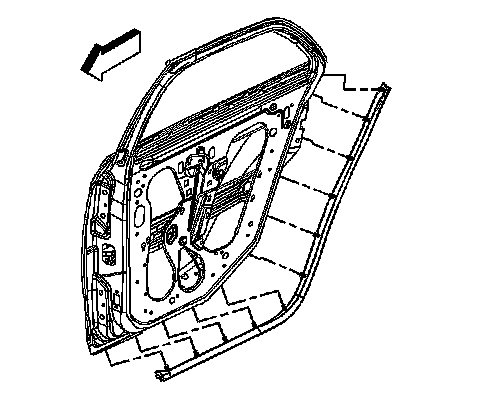

Rear Side Door Bottom Auxiliary Sealing Strip Replacement
Rear Side Door Bottom Auxiliary Sealing Strip Replacement
Removal Procedure

1. With the door open, remove the rear door bottom sealing strip retainers.
2. Remove the sealing strip.
Installation Procedure
1. Install the rear door bottom sealing strip on to the inside lower door edge.
2. Secure the sealing strip by inserting the retainers into the holes in the lower door panel.